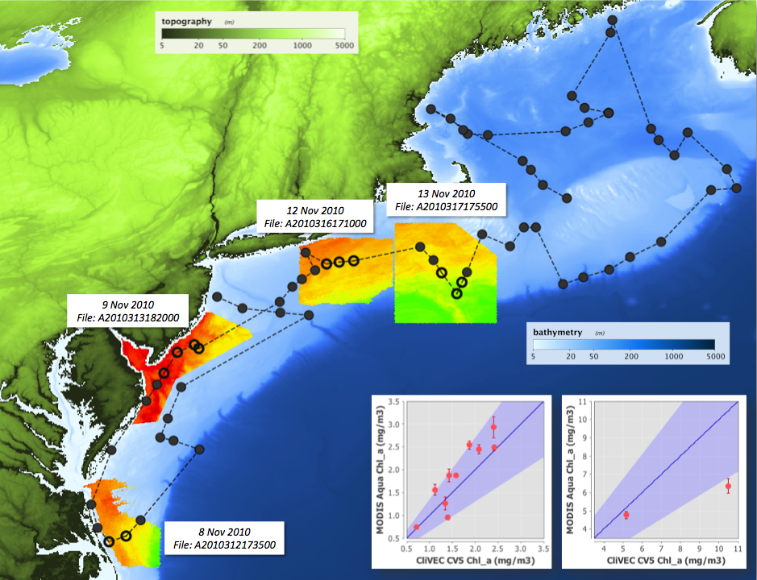

The above image shows a shiptrack for a cruise. The circles are stations where the open circles are the stations which
officially matched up based on a 3 hour time window and other criteria. The chlorophyll imagery is from the satellite.
The correlation plots show the comparison of the satellite measurement of chlorophyll to that of the field measurement value.